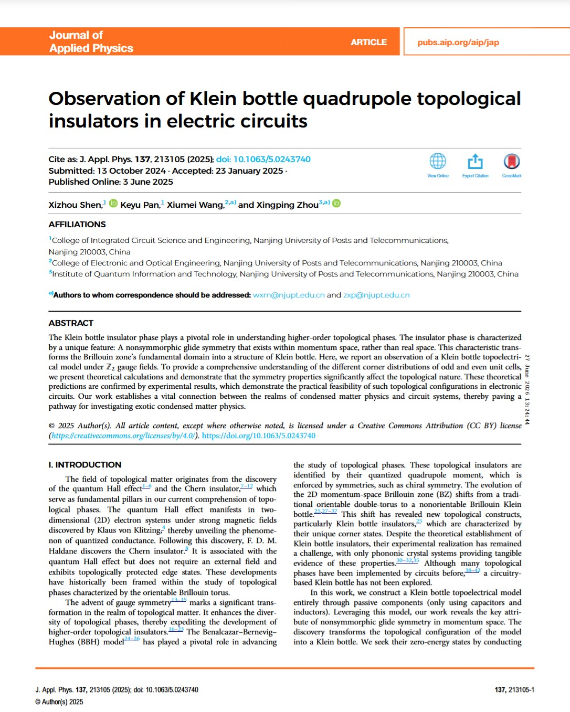
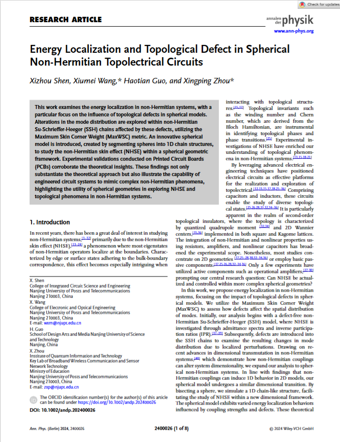
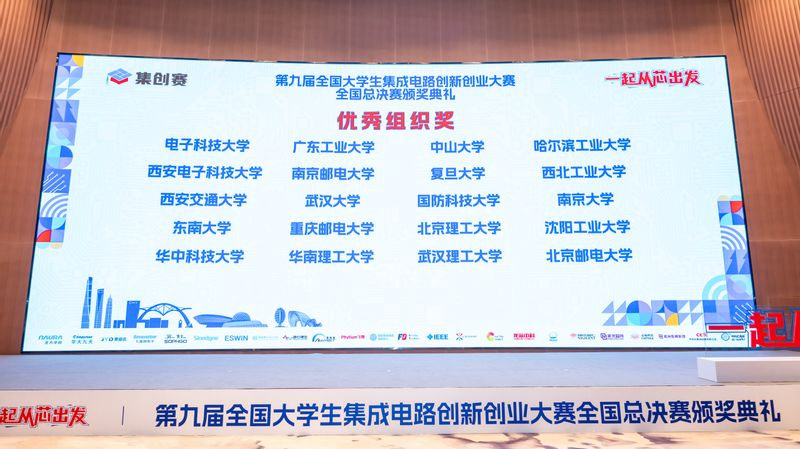
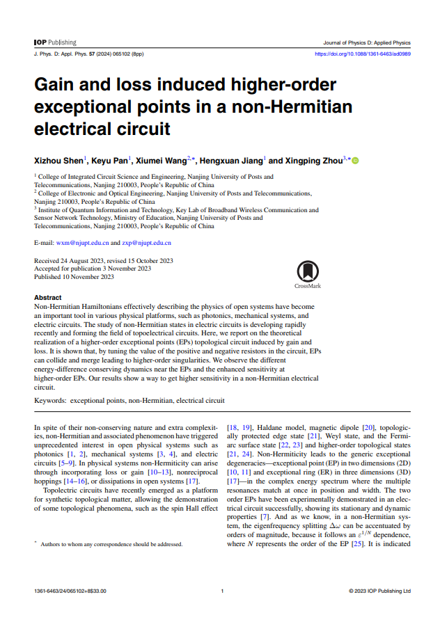
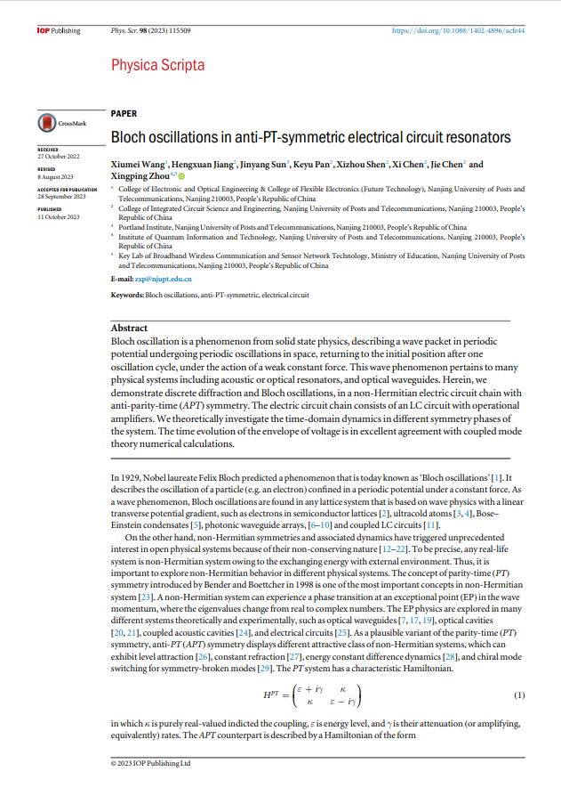
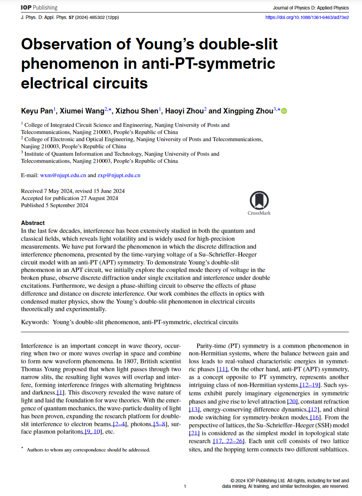

上海交通大学 · 集成电路 · 在读研究生
沈希舟 Xizhou Shen
专注 高速 Pipeline ADC
上海交通大学在读研究生，目前主要研究高速 ADC，正在设计 12 bit · 2 GS/s Pipeline ADC。本科就读于南京邮电大学集成电路科学与工程学院（学号 B21022617），在拓扑电路方向以独立第一作者发表多篇论文，并获全国大学生电子设计竞赛、集创赛、嵌入式芯片竞赛等国家级奖项。
高速数据转换
Pipeline 架构
MDAC · Calibration
拓扑电路 · 本科
NJUPT → SJTU
IC · ADC · TOPO
0
发表论文
0
独立一作
0
授权专利
0
国家级奖项
SCI
发表论文均是 SCI
12b · 2G
Pipeline ADC 设计目标
5 篇期刊论文
3 篇独立/第一作者
集创赛 国赛一等奖 · 富满微杯企业大奖
电赛 全国二等奖 · 江苏赛区一等奖
嵌入式芯片竞赛 全国一等奖
Klein 瓶拓扑电路 · J. Appl. Phys. 2025
12 bit · 2 GS/s Pipeline ADC 设计中
5 篇期刊论文
3 篇独立/第一作者
集创赛 国赛一等奖 · 富满微杯企业大奖
电赛 全国二等奖 · 江苏赛区一等奖
嵌入式芯片竞赛 全国一等奖
Klein 瓶拓扑电路 · J. Appl. Phys. 2025
12 bit · 2 GS/s Pipeline ADC 设计中
Skills & Tools
技能与工具
从电路设计到仿真验证，覆盖高速 ADC 研发与本科拓扑电路实验的完整工具链。
拓扑电路研究
EDA 与开发
News & Records
学术动态与公开记录
以下信息均来自期刊论文、高校官网或竞赛组织方公示，与本人直接相关。

第一作者 · 2025
期刊论文
球形非厄米拓扑电路中的能量局域化
独立第一作者论文发表于 Annalen der Physik（2024），提出球形非厄米拓扑电路模型，PCB 实验验证 NHSE 与拓扑缺陷效应。
查看论文 ↗
学院报道
南邮学子获第九届全国集创赛国赛一等奖 3 项
2025 年 8 月，南京邮电大学官网报道集成电路学院在第九届全国大学生集成电路创新创业大赛获国赛一等奖 3 项（含企业大奖 1 项）。本人本科就读于该学院，并曾获集创赛全国一等奖（富满微杯企业大奖）。
南邮官网报道 ↗
竞赛公示
2023 年全国大学生电子设计竞赛 · 江苏赛区
江苏省大学生电子设计竞赛网公示的综合测评名单中，南京邮电大学代表队成员为沈希舟、姜恒轩、高沐骅（密号 13471），该队最终获全国二等奖、江苏赛区一等奖（A 题）。
江苏赛区官网 ↗
校内公示
南京邮电大学奖学金获得者名单
南京邮电大学学生工作处公示的本科生奖学金名单中，沈希舟（学号 B21022617）位列其中，对应集成电路科学与工程学院本科在读期间的学习与综合表现。

学院荣誉
南邮获集创赛「优秀组织奖」
第九届全国大学生集成电路创新创业大赛总决赛上，南京邮电大学获「优秀组织奖」，国赛一等奖总数列全国高校第五、江苏第一，体现学院在集成电路人才培养方面的整体实力。
Education
教育经历
点击各阶段查看详情，从苏州到上海的成长轨迹。
Research
研究方向
研究生阶段聚焦高速 ADC；本科阶段从事拓扑电路相关研究。
研究生 · 当前高速 ADC
12 bit 精度
2 GS/s 采样率
Pipeline 架构
正在开展 12 bit、2 GS/s Pipeline ADC 设计，涵盖多级流水线架构、运算放大器与比较器、时钟及偏置电路、数字校正等关键模块，面向高速通信与射频采样等应用场景。
输入2 GS/s
→
SHA采样保持
→
Stage 1–N5+5+… bit
→
Digital校正输出
目标：12 bit 有效精度 · 2 GS/s 采样率 · Pipeline 流水线架构
本科阶段拓扑电路与非厄米物理
采用流水线结构将量化过程分级，在速度与精度之间取得平衡，是 GS/s 级 ADC 的主流架构之一。
Publications
学术论文
以下为本科阶段发表的拓扑电路相关论文，涵盖非厄米拓扑、高阶拓扑相与 APT 对称系统等方向。按作者角色筛选，点击卡片可展开摘要。
5
期刊论文
3
独立/第一作者
4
期刊来源
2023—25
发表年份

Gain and loss induced higher-order exceptional points in a non-Hermitian electrical circuit
通过调节电路中正负电阻，使例外点碰撞合并形成高阶奇点，观测到能量差守恒动力学及高阶 EP 处增强的灵敏度。
查看论文 ↗
Bloch oscillations in anti-PT-symmetric electrical circuit resonators
在 APT 对称的非厄米 LC 电路链中演示离散衍射与 Bloch 振荡，电压包络时域演化与耦合模理论数值计算高度吻合。
查看论文 ↗Energy Localization and Topological Defect in Spherical Non-Hermitian Topolectrical Circuits
提出球形非厄米拓扑电路模型，研究拓扑缺陷对非厄米皮肤效应下能量局域化的影响，PCB 实验验证了理论预测。
查看论文 ↗
Observation of Young's double-slit phenomenon in anti-PT-symmetric electrical circuits
在 APT 对称 SSH 电路中实现 Young 双缝干涉，通过移相电路调控相位差与激发间距，首次在电路平台展示光学经典干涉现象。
查看论文 ↗Observation of Klein bottle quadrupole topological insulators in electric circuits
在 Z₂ 规范场下构建 Klein 瓶 BBH 拓扑电路模型，首次在电路中观测 Klein 瓶四极拓扑绝缘体相及奇偶元胞角态差异。
查看论文 ↗Achievements
竞赛与荣誉
点击分类标题展开或收起详情。
集创赛国赛一等奖
富满微杯 · 企业大奖
电赛全国二等奖
江苏赛区一等奖 · A 题
嵌入式竞赛国一
东部赛区一等奖
5 篇期刊论文
3 篇独立/第一作者
科技创新类竞赛 6 项
- 全国大学生电子设计竞赛 — 全国二等奖、江苏赛区一等奖（A题）
- 全国大学生集成电路创新创业大赛 — 全国一等奖（富满微杯企业大奖）、华东赛区一等奖
- 全国大学生嵌入式芯片与系统设计竞赛 — 全国一等奖、东部赛区一等奖
- 第十八届"挑战杯"全国大学生课外学术科技作品竞赛 — 江苏省二等奖
- 第十四届全国大学生数学竞赛（非数学类）— 江苏省三等奖
- 南京邮电大学第二十六届大学生科技节 — "新柚杯"计算机基础能力竞赛一等奖
艺术类竞赛 2 项
- 南京邮电大学艺术作品展活动 — 二等奖
- 南京邮电大学新媒体设计大赛 — 三等奖
志愿服务 2 项
- 南京邮电大学 2021-2022 年疫情防控志愿者
- 2022 年度南京邮电大学"优秀青年志愿者"
奖学金与荣誉 5 项
- 浦芯精英奖学金
- 2022/2023 学年"三好学生标兵"
- 2022/2023 学年"一等奖学金"
- 2021/2022 学年"社会工作优秀奖"
- 2021/2022 学年"精神文明奖"
证书与专利 4 项
- 江苏省计算机二级证书
- 一种具有金属场板的共聚物有机半导体功率器件
- 一种提高横向共聚物器件耐压的高 k 介质结构
- 基于隔离与互连的共聚物有机半导体器件及制备方法
Interactive
科研小互动
测一测你对 ADC 与电路的了解、玩一局 PCB 贪吃蛇，或留言给我。试试点击标签芯片、拖动波形条，还有隐藏彩蛋 ⌨️
🔬 科研快问快答
Pipeline ADC 中，级间通常使用什么电路放大 residue 信号？
得分：0 / 4
🎮 信号链路 · 贪吃蛇
在 PCB 网格中引导信号采集数据点，链路越长得分越高。方向键 / WASD 控制，空格或 P 暂停。
得分
0
最高
0
点击开始，让信号跑起来
- 每吃一个数据点 +10 分
- 速度随得分逐渐提升
- 撞墙或咬到自己则结束
Contact